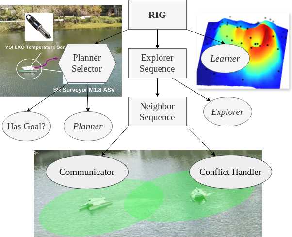
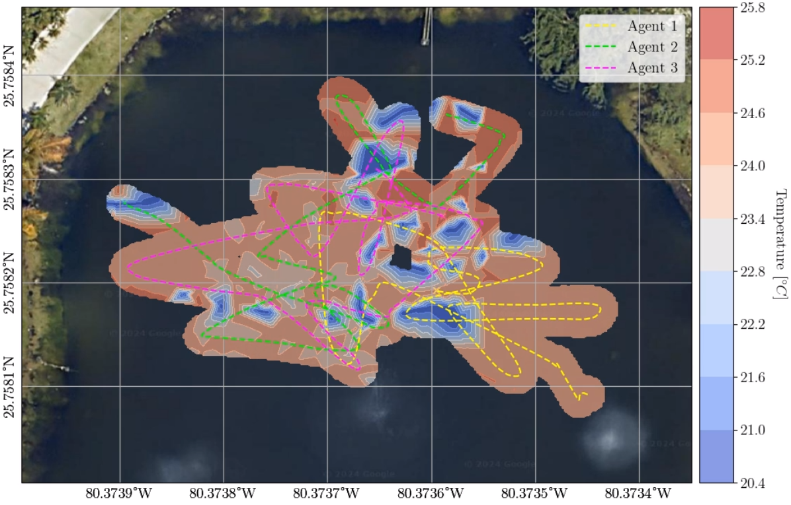
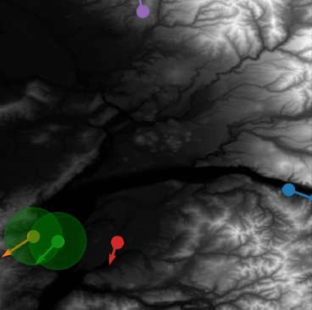
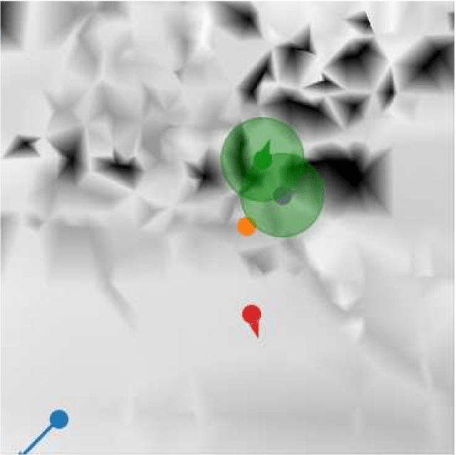
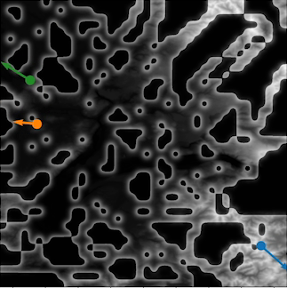
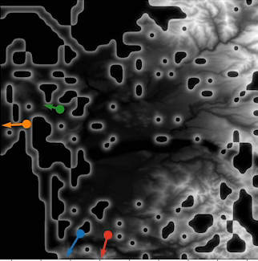
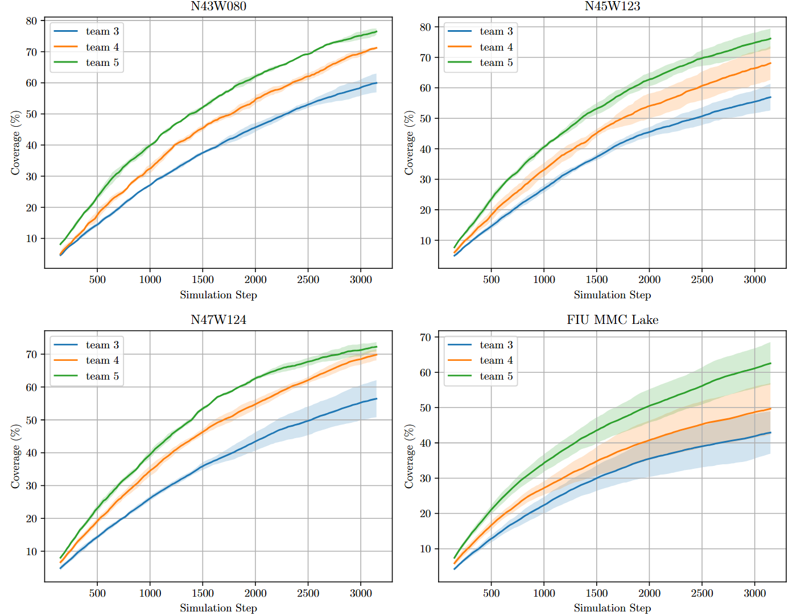
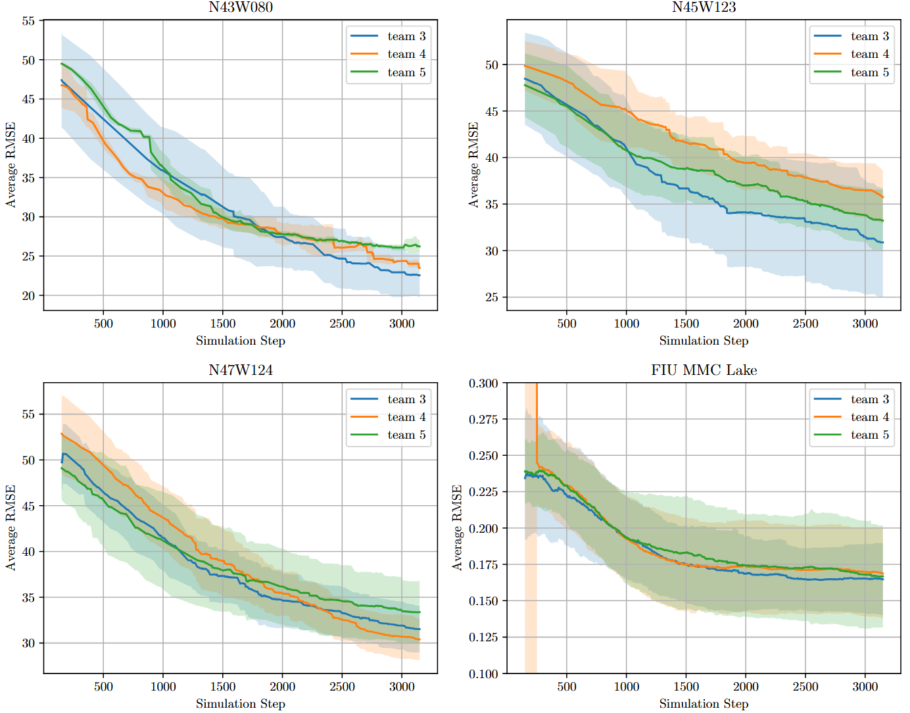
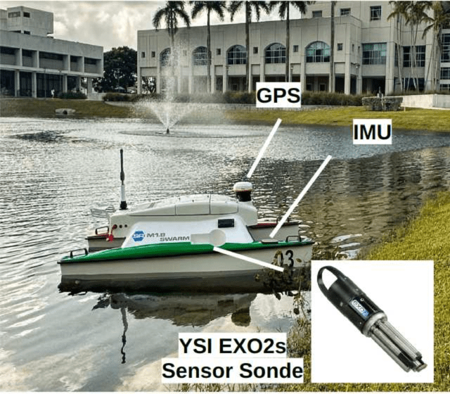

The LCD-RIG system enables multiple robots to collaboratively map scalar fields in a decentralized manner under limited communication constraints. Utilizing quadtree structures for workspace coverage and Gaussian Processes with Attentive Kernels for information estimation, LCD-RIG ensures efficient exploration and robust performance despite asynchronous and pairwise communication. Validated through simulations and real-world experiments with autonomous surface vehicles, LCD-RIG offers scalability, low computational complexity, and resilience to network disruptions.


The LCD-RIG system introduces several novel advancements in decentralized robotic information gathering:
The LCD-RIG system was evaluated in simulations using NASA SRTM digital elevation maps and the FIU MMC Campus Lake, with team sizes of 3, 4, and 5 ASVs in a 20m × 20m workspace. Each ASV followed Dubins' car kinematics (max velocity 1 m/s, control frequency 10 Hz) with a single-beam range sensor (3 Hz, unit Gaussian noise). The system achieved lower prediction error, faster RMSE reduction, and higher area coverage, though larger teams faced congestion trade-offs.






The LCD-RIG system was implemented on three SeaRobotics Surveyor ASVs to map water temperature in a 28m × 28m workspace at FIU's MMC Campus Lake. Each ASV, equipped with a YSI EXO2 sonde, measured temperature at 1 Hz, with localization via GPS and IMU. The LCD-RIG algorithm coordinated ASV motion to efficiently sample the temperature field while avoiding collisions, validated by generating an online temperature map.

The LCD-RIG system was benchmarked against Full GPR, RGPR, DGPR, DRGPR, Local SGPR, and CBDGPR across simulated environments. LCD-RIG achieved a communication complexity of O(K), significantly lower than O(|E|K) of prior methods, with computational complexity of O(K²) and memory complexity of O(|D|). The table below compares complexities, highlighting LCD-RIG's efficiency in decentralized settings.
| Method | Computation | Memory | Communication |
|---|---|---|---|
| Full GPR | O(n²|D|²) | O(n²|D|²) | O(n²|D|) |
| RGPR | O(n²|D|²) | O(n²|D|²) | O(n²|D|) |
| DGPR | O(|D|²) | O(|D|²) | O(|E|K) |
| DRGPR | O(|D|²) | O(|D|²) | O(|E|K) |
| Local SGPR | O(n²|D|) | O(n²|S|²) | O(n²|S|) |
| CBDGPR | O(n²|D|) | O(n²|S|) | O(|E|K) |
| LCD-RIG (This Letter) | O(K²) | O(|D|) | O(K) |
Abdullah Al Redwan Newaz¹, Paulo Padrao², Jose Fuentes², Tauhidul Alam³, Ganesh Govindarajan², Leonardo Bobadilla²
¹University of New Orleans, ²Florida International University, ³Lamar University
@article{newaz2024lcd,
title={LCD-RIG: Limited Communication Decentralized Robotic Information Gathering Systems},
author={Newaz, Abdullah Al Redwan and Padrao, Paulo and Fuentes, Jose and Alam, Tauhidul and Govindarajan, Ganesh and Bobadilla, Leonardo},
journal={IEEE Robotics and Automation Letters},
year={2024},
publisher={IEEE}
}